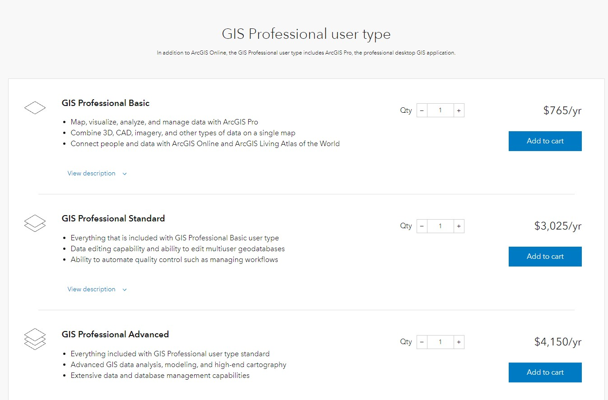
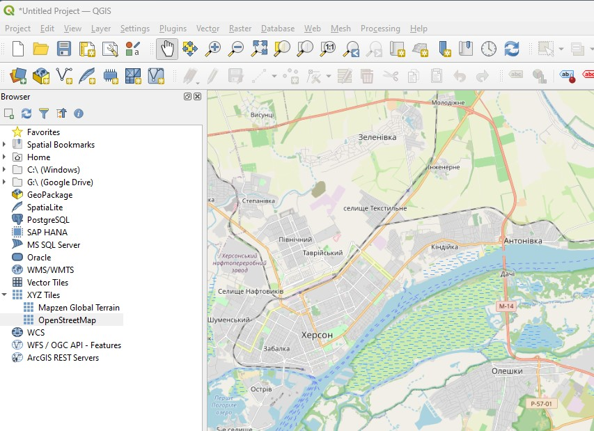
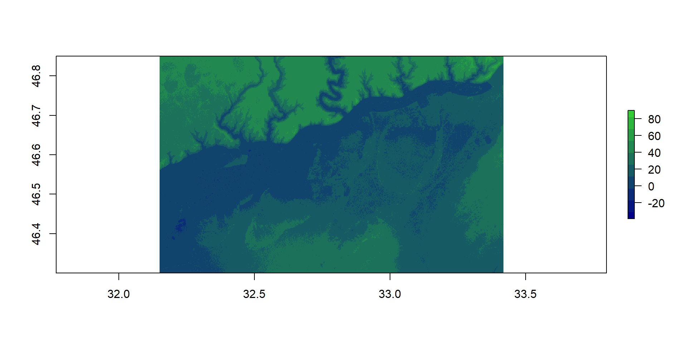
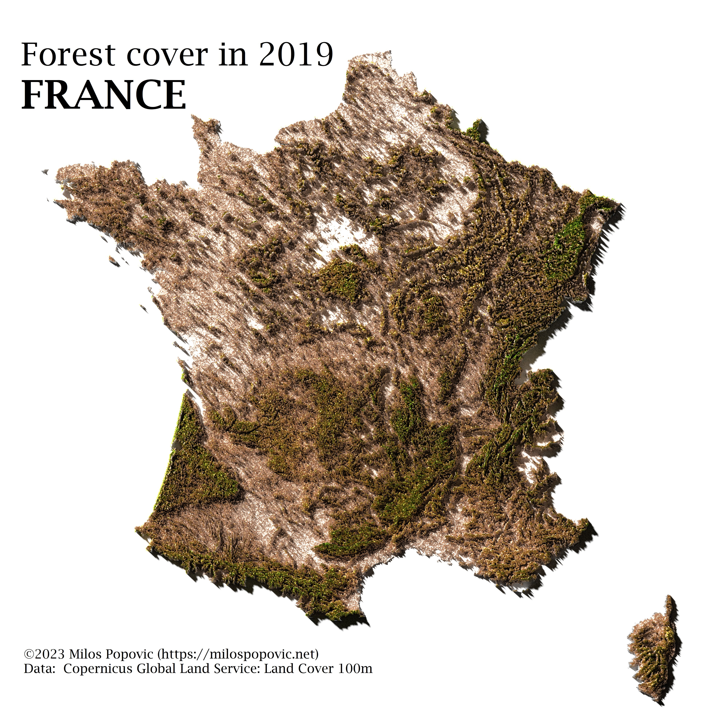
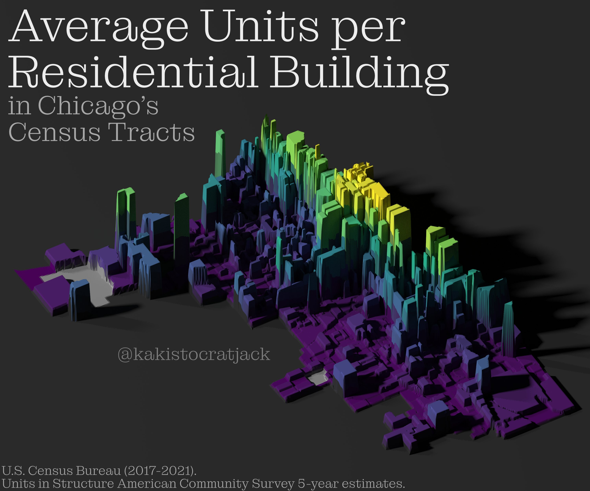
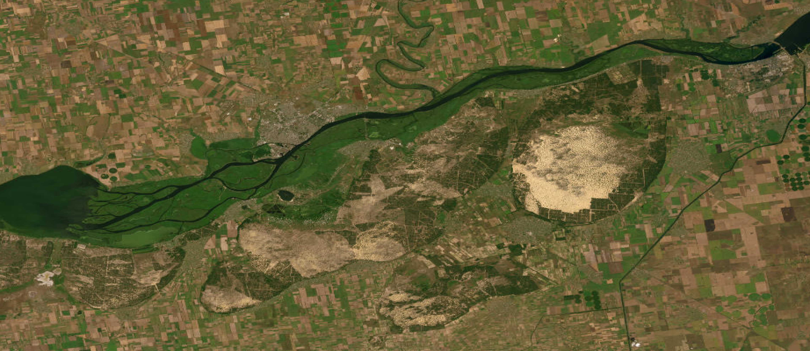
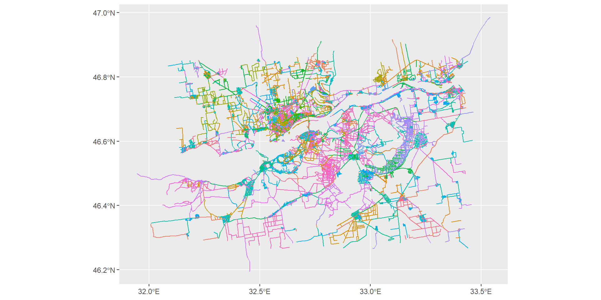

leaflet() |>
fitBounds(32.15,46.85,33.41887,46.30) |>
addProviderTiles(providers$Esri.WorldImagery) |>
addProviderTiles(providers$CartoDB.PositronOnlyLabels,
options = providerTileOptions(opacity = 1))Powerful GIS Made Easy With R
Modeling Flooding From The Kakhovka Dam Destruction
Art Steinmetz
Goals
- Learn about the huge strides made recently in open source GIS
- See how easy map making is with R
- Create a compelling visualization with an animated flood inundation map
Who I Am
- Retired Investment Executive
- Consultant for Posit
- Data Science Hobbyist
- Blogger at
outsiderdata.net
The Old Days
- Proprietary GIS data locked up by governments.
- ArcGIS by ESRI - Great but priced for governments and corporations.
- Data in ESRI “Shape Files.”
Modern Tool Chain
- QGIS is to ArcGIS as GIMP is to Photoshop


- Work with “Simple Features” data in R.
- Learn more: https://r-spatial.github.io/sf/articles/sf1.html
Modern Tool Chain in R
In just the past few years several R packages have arrived that make powerful GIS Tools available to everyone.
- sf, terra - Manipulate spatial objects.
- Maptools, Leaflet - embed interactive maps.
- Rayshader - 3D rendering.
- osmdata - Access human-made map features.
- elevatr - Access topography/bathymetry.
Modern Data Sets
These tools can access a vast universe of publically available map data including
- OpenStreetMap
- OpenTopogrpahy
- USGS topographic data
- Regional government property data
- Terrain and building LIDAR scans
- and many more!
Some are open. Some require a free API key. Learn how to request a key and to save it in your .Renviron file. Never put key in code!
Background
Among the horrors of the the war in Ukraine has been the destruction of a dam across the Dnipro river, upstream from Kherson City. This is an ecological and humanitarian disaster as vast acres of settlements, farmlands and wetlands have been destroyed.
Can we visualize how the rising water submerged much of the land downstream from the dam?
Magic Trick #1: Visualize the Affected Area
Create a Spatial Object for All Further Manipulations
Introducing the simple features object.
- It holds spatial metadata and map features.
lat lon
1 46.85 32.15000
2 46.30 33.41667Simple feature collection with 2 features and 0 fields
Geometry type: POINT
Dimension: XY
Bounding box: xmin: 32.15 ymin: 46.3 xmax: 33.41667 ymax: 46.85
Geodetic CRS: WGS 84
geometry
1 POINT (32.15 46.85)
2 POINT (33.41667 46.3)Simple Features Objects Can be Treated Like Data Frames!
You can add your own features to the map.
Simple feature collection with 2 features and 1 field
Geometry type: POINT
Dimension: XY
Bounding box: xmin: 32.15 ymin: 46.3 xmax: 33.41667 ymax: 46.85
Geodetic CRS: WGS 84
geometry my_stuff
1 POINT (32.15 46.85) Corner 1
2 POINT (33.41667 46.3) Corner 2Simple Feature Objects Are Simple
You can inspect or extract items using familiar techniques while preserving metadata.
Introducing Another Spatial Object : Raster
- A Matrix with metadata and a value for each point/pixel on a map.
- Values can be anything. We will get a raster with elevation data in meters.
- A simple features object is a description of the map, while a raster object is the drawing of the map.
Magic Trick #2: Get The Elevation Data with One Line
class : RasterLayer
dimensions : 1980, 4560, 9028800 (nrow, ncol, ncell)
resolution : 0.0002777778, 0.0002777778 (x, y)
extent : 32.14986, 33.41653, 46.30014, 46.85014 (xmin, xmax, ymin, ymax)
crs : +proj=longlat +datum=WGS84 +no_defs
source : memory
names : file2c3031276412
values : -51, 107 (min, max)Quick and Dirty Plot
Raster has a base R plot method we can use to make a false color relief map.
- Elevations run from -51 to 107 meters.
- Set a color ramp from blue to green.
False Color Topgraphic Map
Introducting Rayshader: Beautiful 3D Visualizations


More Rayshader Porn


Our Goal: Make an Animated Flood Innundation Map
- Make a false color shaded relief map as a base layer.
- Rayshader detects water as zero elevation or expanses of no elevation change.
Shaded Elevation Map with Natural Water Levels

Add Realism: Satellite Imagery
Using the add_overlay() function in Rayshader we can layer on the same satellite image with saw at the start. The basemaps package makes getting a snapshot from any map source a piece of cake.
Base Map with Satellite Image Overlay
Add More Realism: Roads To Show Human Presence
- Open Street Map API offers many layers of map features.
- Take just the osm_lines layer of the “highway” feature.
Simple feature collection with 3 features and 3 fields
Geometry type: LINESTRING
Dimension: XY
Bounding box: xmin: 32.52812 ymin: 46.67192 xmax: 32.71992 ymax: 46.69133
Geodetic CRS: WGS 84
osm_id name alt_name geometry
4424597 4424597 Миколаївське шосе <NA> LINESTRING (32.52812 46.691...
4424599 4424599 Перекопська вулиця <NA> LINESTRING (32.67163 46.671...
4424601 4424601 Антонівський міст <NA> LINESTRING (32.71965 46.676...Big Gotcha With GIS: Coordinate Reference System (CRS)
- There are many, many ways of projecting a curved planet onto a flat surface.
- When combining GIS data from different sources, CRS’s must match.
- The elevation data comes from the Open Topography API.
- The street data comes from the Open Street Maps API.
- The satellite image comes from ESRI.
The Solution
st_transfromreprojects data to a new CRS.
kherson_lines <- sf::st_transform(kherson_roads$osm_lines,
crs = raster::crs(kherson_dnipro))
kherson_lines |> crs() |> cat()GEOGCRS["WGS 84",
ENSEMBLE["World Geodetic System 1984 ensemble",
MEMBER["World Geodetic System 1984 (Transit)"],
MEMBER["World Geodetic System 1984 (G730)"],
MEMBER["World Geodetic System 1984 (G873)"],
MEMBER["World Geodetic System 1984 (G1150)"],
MEMBER["World Geodetic System 1984 (G1674)"],
MEMBER["World Geodetic System 1984 (G1762)"],
MEMBER["World Geodetic System 1984 (G2139)"],
ELLIPSOID["WGS 84",6378137,298.257223563,
LENGTHUNIT["metre",1]],
ENSEMBLEACCURACY[2.0]],
PRIMEM["Greenwich",0,
ANGLEUNIT["degree",0.0174532925199433]],
CS[ellipsoidal,2],
AXIS["geodetic latitude (Lat)",north,
ORDER[1],
ANGLEUNIT["degree",0.0174532925199433]],
AXIS["geodetic longitude (Lon)",east,
ORDER[2],
ANGLEUNIT["degree",0.0174532925199433]],
USAGE[
SCOPE["Horizontal component of 3D system."],
AREA["World."],
BBOX[-90,-180,90,180]],
ID["EPSG",4326]]View the Streets Data
- Remember how we said a simple feature object is a data frame with metadata?
- It just so happens that
ggplot2has ageom_sffor such objects.
Kherson Roads from Open Street Map
Generate Road Overlay for Rayshader
- Generate road layer to reuse in each frame of the animation.
- Speed up rendering by precomputing layers that don’t change.
Put the Layers together

Show Rising Water
- Set any height in the elevation matrix below the “water level” to zero so Rayshader considers it water.
- Order of the overlay matters. Here: sat image, water, roads.


Caveats: This is Just a Dramatization
- The method we use here more properly would model rising sea levels.
- We don’t know exactly how the water affected each area at what time.
- We don’t know what the peak inundation level was for each area.
- The water has receded.
- This does give a dramatic view of the scope of the destruction.
- We do know many people were displaced.
- This clearly shows the vulnerable areas.
At last, Let’s Animate!
- Loop through different values for
water_level. - Save indivdual images as frames.
plot_rising_water <- function(water_level = 0) {
flood_elmat <- ifelse(kh_elmat < water_level, 0, kh_elmat)
base_map |>
add_overlay("img/esri_world_imagery.png") |>
add_water(detect_water(flood_elmat), color = "desert") |>
add_overlay(roads) |>
save_png(
filename = paste0("img/frames/flood_",
formatC(water_level, width = 3, flag = "0"), ".png"),
title_text = paste0(
"Flood Inundation of the Dnipro\nAfter Kakhovka Dam Destruction\n
Water Level:",
formatC(water_level, width = 3, flag = " ")," Meters"),
title_size = 60, title_bar_color = "white"
)
}
0:8 |> walk(plot_rising_water)Annotate A Scale
Do Some really cool magick and ggplot customizing to add a scale to the plot.
Just eye candy.
Way more code and work than it’s worth.
Code Not shown. Visit the Github repo to see it.
github.com/apsteinmetz/r_meetup_talk_1.git
Render the GIF
- Animate as a GIF using the
magickpackage.
The Finished Product

Thank You!
Visit My Data Science Blog:
-
outsiderdata.net
This Was Built With Quarto by Posit. Source Here:
-
github.com/apsteinmetz/r_meetup_talk_1.git
Connect With Me:
-
@adababbage -
artsteinmetz.com -
asteinmetz